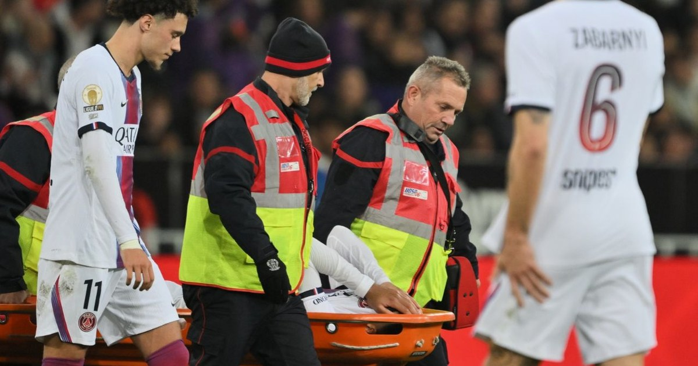

Désiré Doué ruptured his ACL — and PSG just lost a second star to the same injury in a month
Désiré Doué ruptured the ACL in his right knee in PSG's 3-2 win at Nice on Saturday — minutes after scoring. PSG confirmed the diagnosis on Sunday: surgery before the end of the month, and no timeline for his return. It's the second season-ending ACL tear to hit PSG's attack in a month.

Disclosure: this post contains affiliate links. I earn a commission on qualifying purchases.
The diagnosis
Désiré Doué is done for the season. Paris Saint-Germain confirmed on Sunday that the 21-year-old ruptured the anterior cruciate ligament in his right knee in Saturday's Ligue 1 game at Nice, and he will undergo surgery before the end of the month.
"Having ruptured the anterior cruciate ligament in his right knee in yesterday's Ligue 1 game against OGC Nice, Désiré Doué will undergo surgery before the end of the month," PSG said in a brief medical update.
The club set no return date. But an ACL rupture is a months-long recovery — reports around the injury put it at six to nine months — and the expectation across the coverage is that his 2026-27 season is effectively over. It would also put his place in France's Nations League quarter-final against Spain in March in serious doubt.
How it happened
The cruel part is the timing. Doué had just scored PSG's second goal of the game — his second league goal of the season — to put the visitors 2-1 up at the Allianz Riviera. Minutes later, late in the first half, he turned to shield the ball from Nice midfielder Sofiane Diop and his fully extended right leg buckled underneath him. There was no contact.
He went down clutching his knee and was carried off on a stretcher in tears, his hands covering his face, while the match was stopped for around five minutes. Ferran Torres came on in his place — and scored the winner as PSG came from behind to win 3-2, their 12th straight victory in all competitions.
What he said
PSG coach Luis Enrique spoke about the injury on Instagram after the game, before the scan results were in — and he already knew it was bad.
"It's a serious injury, that's clear… It's part of life for top-level professional players; we can see situations like this in almost every matchweek. We have to accept it. I'm sure he'll recover very well and come back even stronger.
"I was able to speak to him; he's in the dressing room, he's so sad and heartbroken."
What it means for PSG
This is the second time in a month PSG have lost a star attacker to the same injury. Khvicha Kvaratskhelia tore the ACL in his right knee against Barcelona on October 20 — a game in which Ousmane Dembélé and captain Marquinhos also tore thigh muscles. Dembélé is back; Kvaratskhelia is out for at least six months. Now Doué joins him.
The depth is still there — Dembélé came off the bench at Nice, Torres scored the winner, and Senny Mayulu, Maghnes Akliouche and Mika Godts can all take on more of the load. But Doué had been, by one assessment, arguably PSG's best player this season, a France international who shot to prominence with an outstanding performance in the 2025 Champions League final against Inter Milan. Losing him and Kvaratskhelia together guts the wide attack of the two-time defending European champions.
The timing is brutal, too. PSG host Roma in the Champions League on Wednesday, and the January window is suddenly a very different conversation for a club that now needs cover on both wings.
For Doué, the road back starts with surgery before the end of November — and a long, quiet winter away from the team he helped carry to the top of Europe.
Gear up: Fanatics